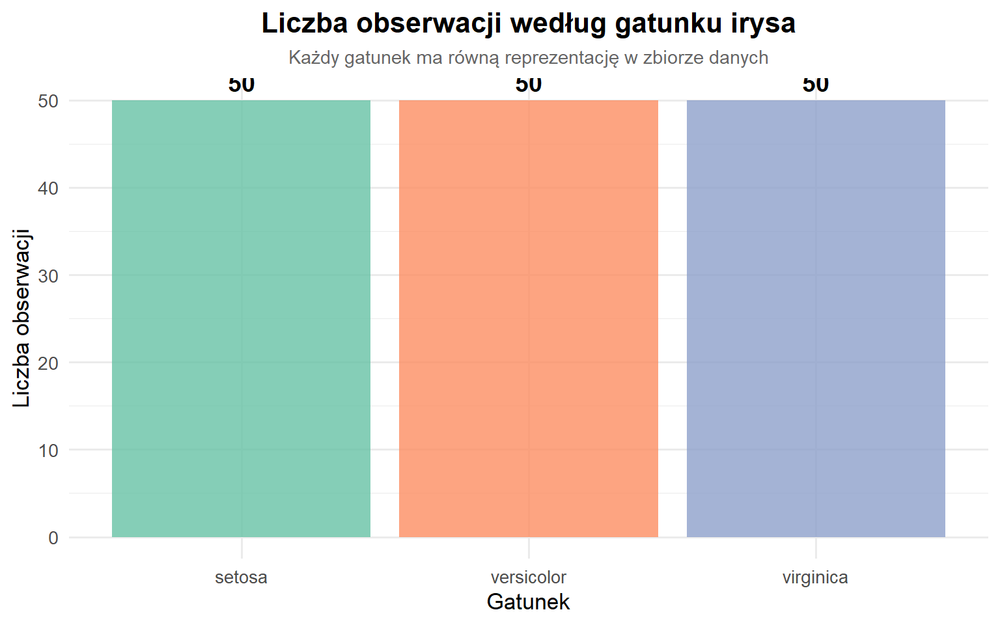
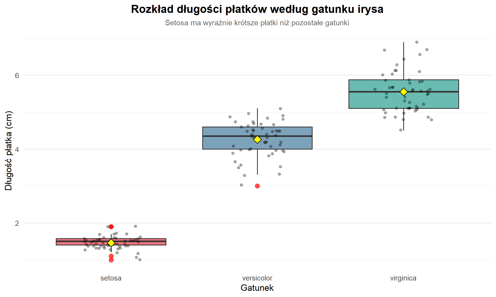
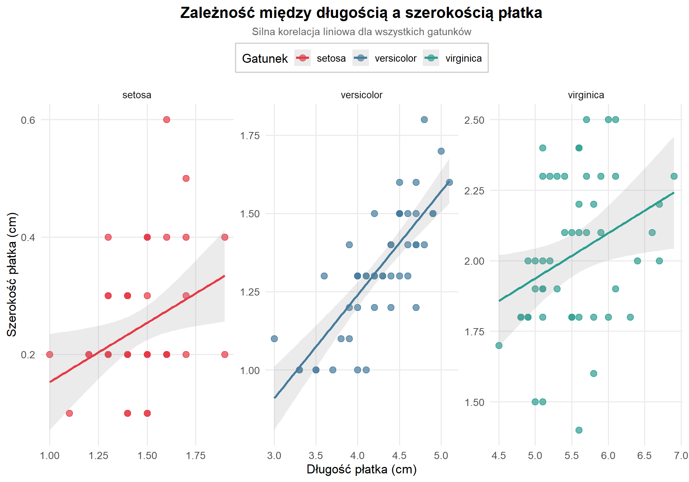
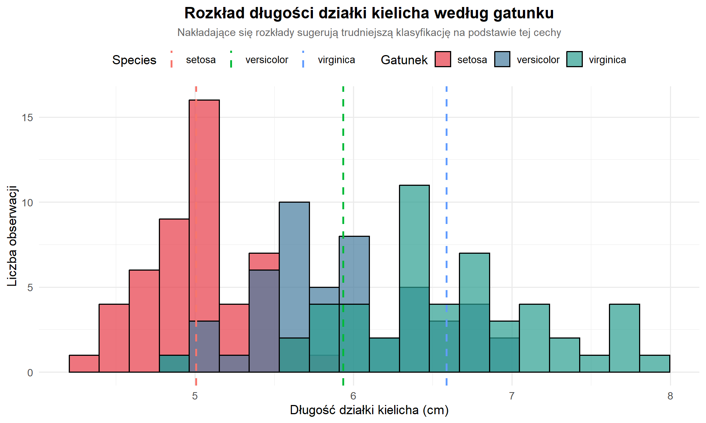
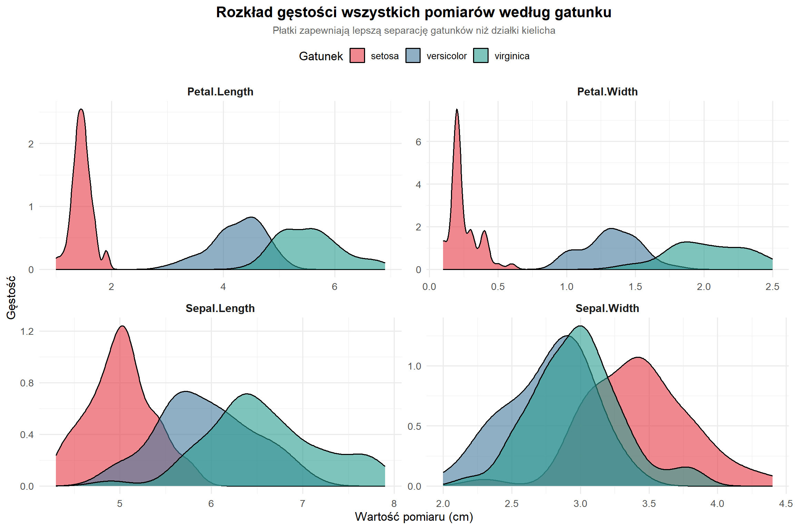
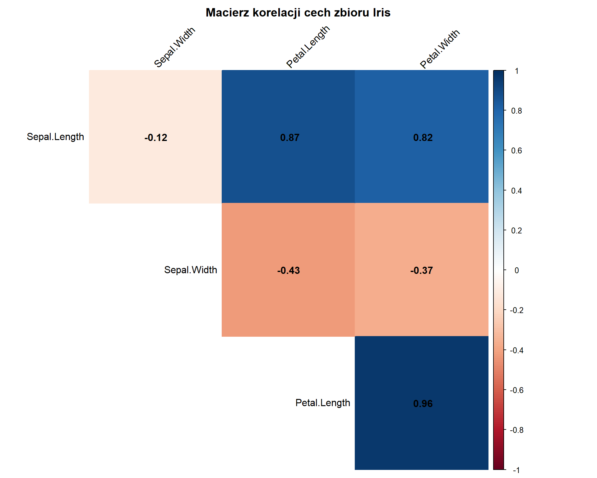

Last updated: 2026-01-05
Checks: 6 1
Knit directory: KK_program_r/
This reproducible R Markdown analysis was created with workflowr (version 1.7.2). The Checks tab describes the reproducibility checks that were applied when the results were created. The Past versions tab lists the development history.
The R Markdown is untracked by Git. To know which version of the R
Markdown file created these results, you’ll want to first commit it to
the Git repo. If you’re still working on the analysis, you can ignore
this warning. When you’re finished, you can run
wflow_publish to commit the R Markdown file and build the
HTML.
Great job! The global environment was empty. Objects defined in the global environment can affect the analysis in your R Markdown file in unknown ways. For reproduciblity it’s best to always run the code in an empty environment.
The command set.seed(20260103) was run prior to running
the code in the R Markdown file. Setting a seed ensures that any results
that rely on randomness, e.g. subsampling or permutations, are
reproducible.
Great job! Recording the operating system, R version, and package versions is critical for reproducibility.
Nice! There were no cached chunks for this analysis, so you can be confident that you successfully produced the results during this run.
Great job! Using relative paths to the files within your workflowr project makes it easier to run your code on other machines.
Great! You are using Git for version control. Tracking code development and connecting the code version to the results is critical for reproducibility.
The results in this page were generated with repository version f0e0dec. See the Past versions tab to see a history of the changes made to the R Markdown and HTML files.
Note that you need to be careful to ensure that all relevant files for
the analysis have been committed to Git prior to generating the results
(you can use wflow_publish or
wflow_git_commit). workflowr only checks the R Markdown
file, but you know if there are other scripts or data files that it
depends on. Below is the status of the Git repository when the results
were generated:
Ignored files:
Ignored: .RData
Ignored: .Rhistory
Ignored: .Rproj.user/
Untracked files:
Untracked: analysis/analiza.Rmd
Untracked: analysis/assets/
Untracked: analysis/prezentacja.qmd
Note that any generated files, e.g. HTML, png, CSS, etc., are not included in this status report because it is ok for generated content to have uncommitted changes.
There are no past versions. Publish this analysis with
wflow_publish() to start tracking its development.
Celem tej analizy jest zbadanie zbioru danych Iris, który zawiera pomiary różnych gatunków irysów. Przeprowadzimy eksploracyjną analizę danych (EDA), przekształcenia danych oraz utworzymy wizualizacje, które pomogą zrozumieć zależności między cechami kwiatów.
Zbiór danych Iris jest jednym z najbardziej znanych zbiorów w statystyce i uczeniu maszynowym. Został wprowadzony przez Ronalda Fishera w 1936 roku.
Źródło: Wbudowany zbiór danych w R (datasets::iris)
Opis: - Liczba obserwacji: 150 (po 50 dla każdego gatunku) - Liczba zmiennych: 5 - Gatunki: Setosa, Versicolor, Virginica
Zmienne: - Sepal.Length - długość
działki kielicha (cm) - Sepal.Width - szerokość działki
kielicha (cm) - Petal.Length - długość płatka (cm) -
Petal.Width - szerokość płatka (cm) - Species
- gatunek irysa
# Załadowanie niezbędnych bibliotek
library(tidyverse) # Pakiet zawierający dplyr, ggplot2, tidyr i inne
library(knitr) # Do tworzenia tabel
library(scales) # Do formatowania wykresów
# Ustawienie tematu dla wykresów
theme_set(theme_minimal())# Wczytanie zbioru danych
data("iris")
# Podgląd danych
head(iris) %>%
kable(caption = "Pierwsze 6 obserwacji zbioru Iris")| Sepal.Length | Sepal.Width | Petal.Length | Petal.Width | Species |
|---|---|---|---|---|
| 5.1 | 3.5 | 1.4 | 0.2 | setosa |
| 4.9 | 3.0 | 1.4 | 0.2 | setosa |
| 4.7 | 3.2 | 1.3 | 0.2 | setosa |
| 4.6 | 3.1 | 1.5 | 0.2 | setosa |
| 5.0 | 3.6 | 1.4 | 0.2 | setosa |
| 5.4 | 3.9 | 1.7 | 0.4 | setosa |
# Struktura danych
str(iris)'data.frame': 150 obs. of 5 variables:
$ Sepal.Length: num 5.1 4.9 4.7 4.6 5 5.4 4.6 5 4.4 4.9 ...
$ Sepal.Width : num 3.5 3 3.2 3.1 3.6 3.9 3.4 3.4 2.9 3.1 ...
$ Petal.Length: num 1.4 1.4 1.3 1.5 1.4 1.7 1.4 1.5 1.4 1.5 ...
$ Petal.Width : num 0.2 0.2 0.2 0.2 0.2 0.4 0.3 0.2 0.2 0.1 ...
$ Species : Factor w/ 3 levels "setosa","versicolor",..: 1 1 1 1 1 1 1 1 1 1 ...# Podsumowanie statystyczne
summary(iris) %>%
kable(caption = "Statystyki opisowe zbioru Iris")| Sepal.Length | Sepal.Width | Petal.Length | Petal.Width | Species | |
|---|---|---|---|---|---|
| Min. :4.300 | Min. :2.000 | Min. :1.000 | Min. :0.100 | setosa :50 | |
| 1st Qu.:5.100 | 1st Qu.:2.800 | 1st Qu.:1.600 | 1st Qu.:0.300 | versicolor:50 | |
| Median :5.800 | Median :3.000 | Median :4.350 | Median :1.300 | virginica :50 | |
| Mean :5.843 | Mean :3.057 | Mean :3.758 | Mean :1.199 | NA | |
| 3rd Qu.:6.400 | 3rd Qu.:3.300 | 3rd Qu.:5.100 | 3rd Qu.:1.800 | NA | |
| Max. :7.900 | Max. :4.400 | Max. :6.900 | Max. :2.500 | NA |
# Sprawdzenie liczby brakujących wartości
missing_data <- colSums(is.na(iris))
cat("Liczba brakujących wartości w każdej kolumnie:\n")Liczba brakujących wartości w każdej kolumnie:print(missing_data)Sepal.Length Sepal.Width Petal.Length Petal.Width Species
0 0 0 0 0 # W tym zbiorze nie ma brakujących wartościWybierzmy tylko kwiaty gatunku Versicolor z długością płatka większą niż 4 cm:
# Filtrowanie - tylko Versicolor z długimi płatkami
iris_filtered <- iris %>%
filter(Species == "versicolor", Petal.Length > 4)
cat("Liczba obserwacji spełniających kryteria:", nrow(iris_filtered), "\n")Liczba obserwacji spełniających kryteria: 34 head(iris_filtered) %>%
kable(caption = "Przykłady przefiltrowanych danych")| Sepal.Length | Sepal.Width | Petal.Length | Petal.Width | Species |
|---|---|---|---|---|
| 7.0 | 3.2 | 4.7 | 1.4 | versicolor |
| 6.4 | 3.2 | 4.5 | 1.5 | versicolor |
| 6.9 | 3.1 | 4.9 | 1.5 | versicolor |
| 6.5 | 2.8 | 4.6 | 1.5 | versicolor |
| 5.7 | 2.8 | 4.5 | 1.3 | versicolor |
| 6.3 | 3.3 | 4.7 | 1.6 | versicolor |
Dodajmy nowe zmienne: stosunek długości do szerokości dla działki kielicha i płatka:
# Tworzenie nowych zmiennych - współczynniki proporcji
iris_extended <- iris %>%
mutate(
Sepal.Ratio = Sepal.Length / Sepal.Width,
Petal.Ratio = Petal.Length / Petal.Width,
Sepal.Area = Sepal.Length * Sepal.Width,
Petal.Area = Petal.Length * Petal.Width
)
# Wyświetlenie wybranych kolumn
iris_extended %>%
select(Species, Sepal.Ratio, Petal.Ratio, Sepal.Area, Petal.Area) %>%
head(10) %>%
kable(caption = "Przykłady nowo utworzonych zmiennych", digits = 2)| Species | Sepal.Ratio | Petal.Ratio | Sepal.Area | Petal.Area |
|---|---|---|---|---|
| setosa | 1.46 | 7.00 | 17.85 | 0.28 |
| setosa | 1.63 | 7.00 | 14.70 | 0.28 |
| setosa | 1.47 | 6.50 | 15.04 | 0.26 |
| setosa | 1.48 | 7.50 | 14.26 | 0.30 |
| setosa | 1.39 | 7.00 | 18.00 | 0.28 |
| setosa | 1.38 | 4.25 | 21.06 | 0.68 |
| setosa | 1.35 | 4.67 | 15.64 | 0.42 |
| setosa | 1.47 | 7.50 | 17.00 | 0.30 |
| setosa | 1.52 | 7.00 | 12.76 | 0.28 |
| setosa | 1.58 | 15.00 | 15.19 | 0.15 |
Obliczmy średnie wartości dla każdego gatunku:
# Grupowanie według gatunku i obliczenie statystyk
iris_summary <- iris%>%
group_by(Species) %>%
summarise(
N = n(),
Avg_Sepal_Length = mean(Sepal.Length),
SD_Sepal_Length = sd(Sepal.Length),
Avg_Petal_Length = mean(Petal.Length),
SD_Petal_Length = sd(Petal.Length),
Avg_Sepal_Width = mean(Sepal.Width),
Avg_Petal_Width = mean(Petal.Width)
)
iris_summary %>%
kable(caption = "Statystyki według gatunku", digits = 2)| Species | N | Avg_Sepal_Length | SD_Sepal_Length | Avg_Petal_Length | SD_Petal_Length | Avg_Sepal_Width | Avg_Petal_Width |
|---|---|---|---|---|---|---|---|
| setosa | 50 | 5.01 | 0.35 | 1.46 | 0.17 | 3.43 | 0.25 |
| versicolor | 50 | 5.94 | 0.52 | 4.26 | 0.47 | 2.77 | 1.33 |
| virginica | 50 | 6.59 | 0.64 | 5.55 | 0.55 | 2.97 | 2.03 |
Stwórzmy kategorię wielkości kwiatów na podstawie pola powierzchni płatka:
# Kategoryzacja na podstawie powierzchni płatka
iris_categorized <- iris_extended %>%
mutate(
Size_Category = case_when(
Petal.Area < 2 ~ "Mały",
Petal.Area < 8 ~ "Średni",
TRUE ~ "Duży"
)
)
# Zliczenie w każdej kategorii według gatunku
size_summary <- iris_categorized %>%
group_by(Species, Size_Category) %>%
summarise(Count = n(), .groups = "drop")
size_summary %>%
kable(caption = "Rozkład wielkości kwiatów według gatunku")| Species | Size_Category | Count |
|---|---|---|
| setosa | Mały | 50 |
| versicolor | Duży | 3 |
| versicolor | Średni | 47 |
| virginica | Duży | 46 |
| virginica | Średni | 4 |
# Wykres słupkowy przedstawiający liczbę obserwacji każdego gatunku
ggplot(iris, aes(x = Species, fill = Species)) +
geom_bar(alpha = 0.8) +
scale_fill_brewer(palette = "Set2") +
labs(
title = "Liczba obserwacji według gatunku irysa",
subtitle = "Każdy gatunek ma równą reprezentację w zbiorze danych",
x = "Gatunek",
y = "Liczba obserwacji"
) +
theme_minimal(base_size = 13) +
theme(
plot.title = element_text(face = "bold", size = 16, hjust = 0.5),
plot.subtitle = element_text(size = 11, hjust = 0.5, color = "gray40"),
legend.position = "none"
) +
geom_text(
stat = "count",
aes(label = after_stat(count)),
vjust = -0.5,
size = 5,
fontface = "bold"
)
Interpretacja: Zbiór danych jest zbalansowany - każdy z trzech gatunków irysów ma dokładnie 50 obserwacji. Taka równomierność jest idealna do analizy statystycznej i modelowania.
# Wykres pudełkowy porównujący rozkład długości płatków między gatunkami
ggplot(iris, aes(x = Species, y = Petal.Length, fill = Species)) +
geom_boxplot(alpha = 0.7, outlier.color = "red", outlier.size = 3) +
geom_jitter(width = 0.2, alpha = 0.3, size = 1.5) +
scale_fill_manual(values = c("#E63946", "#457B9D", "#2A9D8F")) +
labs(
title = "Rozkład długości płatków według gatunku irysa",
subtitle = "Setosa ma wyraźnie krótsze płatki niż pozostałe gatunki",
x = "Gatunek",
y = "Długość płatka (cm)"
) +
theme_minimal(base_size = 13) +
theme(
plot.title = element_text(face = "bold", size = 16, hjust = 0.5),
plot.subtitle = element_text(size = 11, hjust = 0.5, color = "gray40"),
legend.position = "none",
panel.grid.major.x = element_blank()
) +
stat_summary(
fun = mean,
geom = "point",
shape = 23,
size = 4,
fill = "yellow",
color = "black"
)
Interpretacja: - Setosa ma wyraźnie krótsze płatki (1-2 cm) w porównaniu do innych gatunków. - Versicolor ma płatki o średniej długości (3-5 cm). - Virginica posiada najdłuższe płatki (4.5-7 cm). - Żółte romby oznaczają średnią wartość dla każdego gatunku. - Czerwone punkty to obserwacje odstające.
# Wykres rozproszenia pokazujący zależność między długością a szerokością płatka
ggplot(iris, aes(x = Petal.Length, y = Petal.Width, color = Species)) +
geom_point(size = 3, alpha = 0.7) +
geom_smooth(method = "lm", se = TRUE, alpha = 0.2) +
scale_color_manual(values = c("#E63946", "#457B9D", "#2A9D8F")) +
labs(
title = "Zależność między długością a szerokością płatka",
subtitle = "Silna korelacja liniowa dla wszystkich gatunków",
x = "Długość płatka (cm)",
y = "Szerokość płatka (cm)",
color = "Gatunek"
) +
theme_minimal(base_size = 13) +
theme(
plot.title = element_text(face = "bold", size = 16, hjust = 0.5),
plot.subtitle = element_text(size = 11, hjust = 0.5, color = "gray40"),
legend.position = "top",
legend.background = element_rect(fill = "white", color = "gray80"),
panel.grid.minor = element_blank()
) +
facet_wrap(~Species, scales = "free")
Interpretacja: - Istnieje silna dodatnia korelacja między długością a szerokością płatka dla wszystkich gatunków. - Każdy gatunek zajmuje odrębny obszar na wykresie, co sugeruje dobrą separowalność. - Linie trendu pokazują liniową zależność między zmiennymi. - Setosa ma najmniejsze płatki i najsłabszą korelację. - Virginica i Versicolor wykazują silniejszą liniową zależność.
# Histogram przedstawiający rozkład długości działki kielicha
ggplot(iris, aes(x = Sepal.Length, fill = Species)) +
geom_histogram(bins = 20, alpha = 0.7, position = "identity", color = "black") +
scale_fill_manual(values = c("#E63946", "#457B9D", "#2A9D8F")) +
labs(
title = "Rozkład długości działki kielicha według gatunku",
subtitle = "Nakładające się rozkłady sugerują trudniejszą klasyfikację na podstawie tej cechy",
x = "Długość działki kielicha (cm)",
y = "Liczba obserwacji",
fill = "Gatunek"
) +
theme_minimal(base_size = 13) +
theme(
plot.title = element_text(face = "bold", size = 16, hjust = 0.5),
plot.subtitle = element_text(size = 11, hjust = 0.5, color = "gray40"),
legend.position = "top"
) +
geom_vline(
data = iris %>% group_by(Species) %>% summarise(mean_val = mean(Sepal.Length)),
aes(xintercept = mean_val, color = Species),
linetype = "dashed",
size = 1
)
Interpretacja: - Rozkłady długości działki kielicha częściowo się nakładają między gatunkami. - Pionowe przerywane linie pokazują średnie wartości dla każdego gatunku. - Setosa ma najkrótsze działki kielicha (średnio ~5 cm). - Virginica ma najdłuższe działki kielicha (średnio ~6.5 cm). - Cecha ta sama w sobie może być niewystarczająca do rozróżnienia gatunków.
# Przekształcenie danych do formatu długiego dla facet_wrap
iris_long <- iris %>%
pivot_longer(
cols = -Species,
names_to = "Measurement",
values_to = "Value"
)
# Wykres gęstości dla wszystkich pomiarów
ggplot(iris_long, aes(x = Value, fill = Species)) +
geom_density(alpha = 0.6) +
scale_fill_manual(values = c("#E63946", "#457B9D", "#2A9D8F")) +
facet_wrap(~Measurement, scales = "free") +
labs(
title = "Rozkład gęstości wszystkich pomiarów według gatunku",
subtitle = "Płatki zapewniają lepszą separację gatunków niż działki kielicha",
x = "Wartość pomiaru (cm)",
y = "Gęstość",
fill = "Gatunek"
) +
theme_minimal(base_size = 13) +
theme(
plot.title = element_text(face = "bold", size = 16, hjust = 0.5),
plot.subtitle = element_text(size = 11, hjust = 0.5, color = "gray40"),
legend.position = "top",
strip.text = element_text(face = "bold", size = 12)
)
Interpretacja: - Petal.Length i
Petal.Width najlepiej rozdzielają gatunki - minimalne
nakładanie się rozkładów. - Sepal.Length i
Sepal.Width mają większe nakładanie się, zwłaszcza między
Versicolor i Virginica. - Setosa jest najłatwiejsza do odróżnienia od
pozostałych gatunków ze względu na wyraźnie mniejsze płatki.
# Obliczenie macierzy korelacji
library(corrplot)
# Macierz korelacji dla zmiennych numerycznych
cor_matrix <- iris %>%
select(-Species) %>%
cor()
# Wizualizacja macierzy korelacji
corrplot(
cor_matrix,
method = "color",
type = "upper",
addCoef.col = "black",
tl.col = "black",
tl.srt = 45,
diag = FALSE,
title = "Macierz korelacji cech zbioru Iris",
mar = c(0, 0, 2, 0)
)
Interpretacja: - Najsilniejsza korelacja: Petal.Length ↔︎ Petal.Width (0.96) - Silna korelacja: Sepal.Length ↔︎ Petal.Length (0.87) - Negatywna korelacja: Sepal.Width ↔︎ Petal.Length (-0.43) - Cechy płatków są silnie skorelowane ze sobą.
Zbiór danych jest zbalansowany - po 50 obserwacji na gatunek.
Separowalność gatunków:
Najważniejsze cechy dyskryminujące:
Korelacje:
Możliwości modelowania:
Analiza utworzona: 2026-01-05
sessionInfo()R version 4.3.2 (2023-10-31 ucrt)
Platform: x86_64-w64-mingw32/x64 (64-bit)
Running under: Windows 11 x64 (build 26100)
Matrix products: default
locale:
[1] LC_COLLATE=Polish_Poland.utf8 LC_CTYPE=Polish_Poland.utf8
[3] LC_MONETARY=Polish_Poland.utf8 LC_NUMERIC=C
[5] LC_TIME=Polish_Poland.utf8
time zone: Europe/Warsaw
tzcode source: internal
attached base packages:
[1] stats graphics grDevices utils datasets methods base
other attached packages:
[1] corrplot_0.95 scales_1.4.0 knitr_1.49 lubridate_1.9.4
[5] forcats_1.0.0 stringr_1.5.1 dplyr_1.1.4 purrr_1.0.2
[9] readr_2.1.5 tidyr_1.3.1 tibble_3.2.1 ggplot2_4.0.1
[13] tidyverse_2.0.0
loaded via a namespace (and not attached):
[1] sass_0.4.9 utf8_1.2.4 generics_0.1.3 lattice_0.21-9
[5] stringi_1.8.4 hms_1.1.3 digest_0.6.37 magrittr_2.0.3
[9] timechange_0.3.0 evaluate_1.0.3 grid_4.3.2 RColorBrewer_1.1-3
[13] fastmap_1.2.0 Matrix_1.6-1.1 rprojroot_2.1.1 workflowr_1.7.2
[17] jsonlite_1.8.9 promises_1.3.2 mgcv_1.9-0 fansi_1.0.6
[21] jquerylib_0.1.4 cli_3.6.3 rlang_1.1.4 splines_4.3.2
[25] withr_3.0.2 cachem_1.1.0 yaml_2.3.10 tools_4.3.2
[29] tzdb_0.5.0 httpuv_1.6.15 vctrs_0.6.5 R6_2.5.1
[33] lifecycle_1.0.4 git2r_0.36.2 fs_1.6.5 pkgconfig_2.0.3
[37] pillar_1.9.0 bslib_0.8.0 later_1.4.1 gtable_0.3.6
[41] glue_1.8.0 Rcpp_1.0.13-1 xfun_0.50 tidyselect_1.2.1
[45] rstudioapi_0.17.1 farver_2.1.2 nlme_3.1-163 htmltools_0.5.8.1
[49] labeling_0.4.3 rmarkdown_2.29 compiler_4.3.2 S7_0.2.0